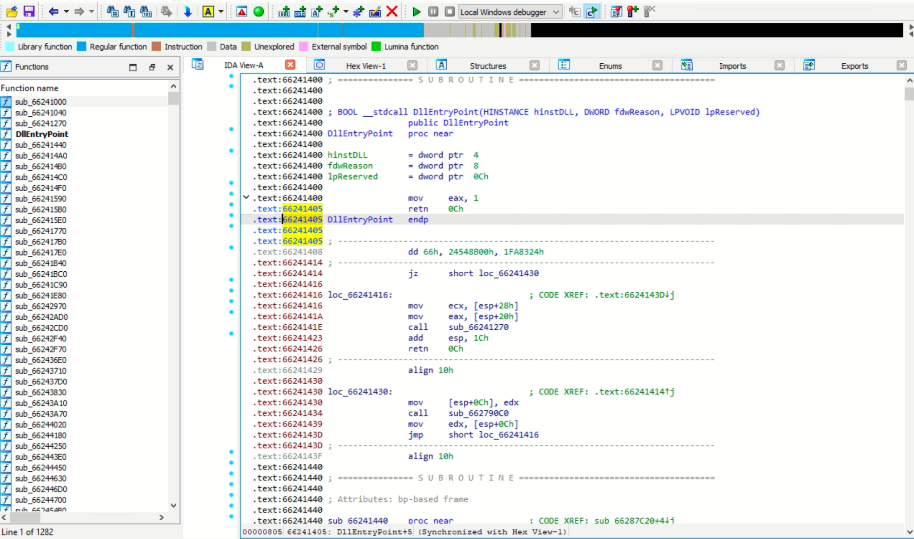
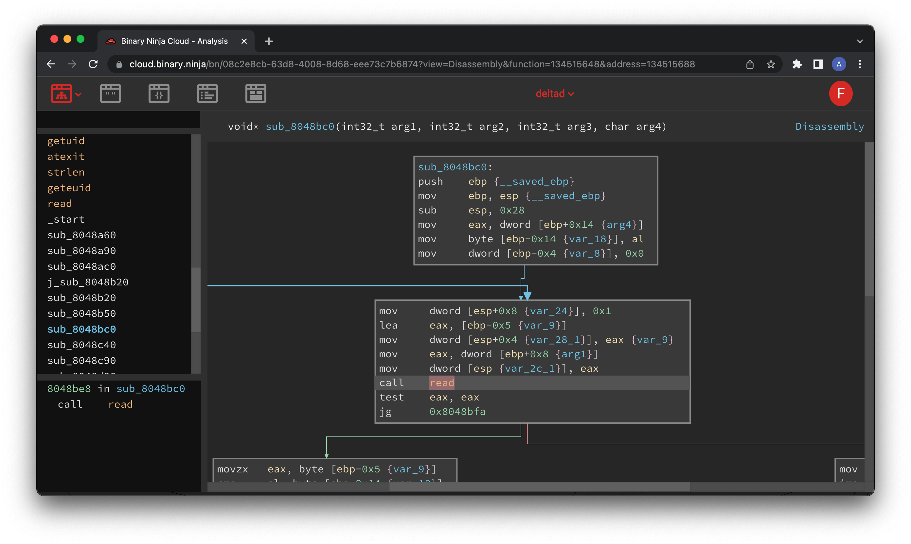

IDA
IDA Pro (Interactive Disassembler) to jedno z najpotężniejszych narzędzi do inżynierii wstecznej, szeroko stosowane w analizie złośliwego oprogramowania, badaniach bezpieczeństwa oraz rozkładaniu aplikacji na czynniki pierwsze. IDA Pro pozwala na disasemblację kodu maszynowego na asembler, umożliwiając użytkownikom analizę działania programów na poziomie procesora. Dzięki interaktywnemu interfejsowi użytkownik może edytować analizowany kod, dodawać komentarze i nawigować po strukturze programu. IDA obsługuje wiele architektur procesorów i formatów plików binarnych, co czyni go wszechstronnym narzędziem w analizie oprogramowania. Dzięki modułowi Hex-Rays Decompiler, IDA umożliwia także dekompilację kodu do formy zbliżonej do C, co ułatwia zrozumienie działania programów. Program oferuje funkcje debugowania, automatyzacji za pomocą skryptów (np. w Pythonie) oraz możliwość rozszerzenia jego funkcji za pomocą wtyczek. IDA Pro jest wykorzystywany zarówno przez badaczy bezpieczeństwa, jak i inżynierów oprogramowania, umożliwiając dokładną analizę plików binarnych, debugowanie oraz identyfikację luk w zabezpieczeniach.
BinaryNinja
Binary Ninja to nowoczesne narzędzie do inżynierii wstecznej i analizy plików binarnych, cenione za przyjazny interfejs i zaawansowane funkcje dekompilacji. Umożliwia analizę kodu maszynowego, przekształcanie go w asembler oraz wygenerowanie kodu wysokopoziomowego zbliżonego do C. Narzędzie jest zoptymalizowane pod kątem prostoty użytkowania i automatyzacji zadań, oferując wsparcie dla skryptów w Pythonie, co czyni je popularnym wśród badaczy bezpieczeństwa oraz analityków złośliwego oprogramowania. Binary Ninja obsługuje różne architektury procesorów i jest szybsze oraz bardziej elastyczne niż tradycyjne narzędzia.